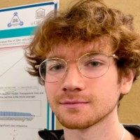

Building State vs. Using State: Representation and Utilization in Multi-Step Tasks
Task-agnostic methods for improving downstream performance by helping language models and reinforcement-learning agents use learned internal state more effectively.

Task-agnostic methods for improving downstream performance by helping language models and reinforcement-learning agents use learned internal state more effectively.
A learned search controller that amortizes verifier-guided search, improving hard-problem solve rates while reducing inference compute.
Decision-preserving world-model compression that retains near-full planning performance using one percent of the original state space.
An empirical study of positional representation in GPT-2-style transformers, with experiments scaling to 1.2B parameters on H100s.
May–Sep 2026
Worked on autonomous data and quantitative-research systems, alongside large deep-learning models for market features.
Dec 2024–May 2026
Developed adversarially robust quantization methods and ran reproducible multi-node H100 experiments on national HPC infrastructure.
Sep–Dec 2024
Trained a policy-gradient agent to partition supply-chain optimization graphs, reducing downstream solver time by 33 percent.
I am completing an Honours Bachelor of Mathematics at the University of Ottawa, expected in 2027. My research combines theory and experiment across deep learning, reinforcement learning, and optimization, with large-scale empirical work using PyTorch, JAX, distributed training, Slurm, and multi-node H100 systems.